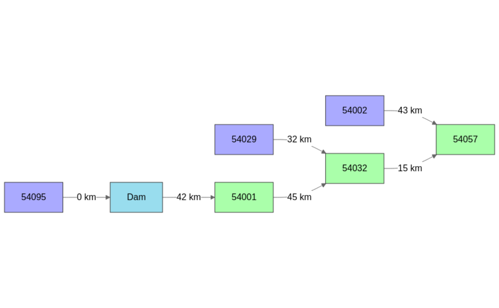

This function acts as RunModel.GRiwrmInputsModel but for a model containing a Supervisor.
Usage
# S3 method for class 'Supervisor'
RunModel(x, RunOptions, Param, ...)Arguments
- x
Object of class Supervisor see CreateSupervisor for details
- RunOptions
Object of class GRiwrmRunOptions, see CreateRunOptions for details
- Param
list of parameter values (See . The list item names are the IDs of the sub-basins. Each item is a vector of numerical parameters
- ...
Further arguments for compatibility with S3 methods
Value
GRiwrmOutputsModel object which is a list of OutputsModel objects (See airGR::RunModel) for each node of the semi-distributed model
Examples
###############################################################################
# An example of reservoir management on an hypothetical dam at station "54095"
# on the Severn river build to support low-flows at "54057"
###############################################################################
# A minimum flow of 50 m3/s is maintained at the dam location and an extra-release
# is provided when the flow at the downstream station "54057" cross a minimum
# threshold of 65 m3/s. The dam has a storage capacity of 650 millions m3
###############################################################################
library(airGRiwrm)
# Load Severn network information
data(Severn)
nodes <- Severn$BasinsInfo[, c(
"gauge_id",
"downstream_id",
"distance_downstream",
"area"
)]
nodes$model <- "RunModel_GR4J"
# Insert a dam downstream the location the gauging station 54095
# The dam is a direct injection node
nodes$downstream_id[nodes$gauge_id == "54095"] <- "Dam"
nodes$distance_downstream[nodes$gauge_id == "54095"] <- 0
nodes <- rbind(
nodes,
data.frame(
gauge_id = "Dam",
downstream_id = "54001",
distance_downstream = 42,
area = NA,
model = "RunModel_Reservoir"
)
)
griwrm <- CreateGRiwrm(
nodes,
list(id = "gauge_id", down = "downstream_id", length = "distance_downstream")
)
if (interactive()) {
plot(griwrm)
}
# Format meteorological inputs for CreateInputs
BasinsObs <- Severn$BasinsObs
DatesR <- BasinsObs[[1]]$DatesR
PrecipTot <- cbind(sapply(BasinsObs, function(x) {
x$precipitation
}))
PotEvapTot <- cbind(sapply(BasinsObs, function(x) {
x$peti
}))
Precip <- ConvertMeteoSD(griwrm, PrecipTot)
PotEvap <- ConvertMeteoSD(griwrm, PotEvapTot)
# Create a release flow time series for the dam
# This release will be modified by the Supervisor
# We initiate it with the natural flow for having a good initialization of the
# model at the first time step of the running period
Qrelease <- data.frame(
Dam = BasinsObs$`54095`$discharge_spec *
griwrm$area[griwrm$id == "54095"] *
1E3
)
# InputsModel object
IM_severn <- CreateInputsModel(
griwrm,
DatesR,
Precip,
PotEvap,
Qrelease = Qrelease
)
#> CreateInputsModel.GRiwrm: Processing sub-basin 54095...
#> CreateInputsModel.GRiwrm: Processing sub-basin 54002...
#> CreateInputsModel.GRiwrm: Processing sub-basin 54029...
#> CreateInputsModel.GRiwrm: Processing sub-basin Dam...
#> CreateInputsModel.GRiwrm: Processing sub-basin 54001...
#> CreateInputsModel.GRiwrm: Processing sub-basin 54032...
#> CreateInputsModel.GRiwrm: Processing sub-basin 54057...
# Initialization of the Supervisor
sv <- CreateSupervisor(IM_severn)
# Dam management is modeled by a controller
# This controller releases a minimum flow Qmin and provides
# extra release if flow measured somewhere is below Qthreshold
# Flow is expressed in m3 / time step
# Y[1] = runoff flow at gauging station 54095 filling the reservoir
# Y[2] = flow at gauging station 54057, location of the low-flow objective
# The returned value is the release calculated at the reservoir
# We need to enclose the Supervisor variable and other parameters in
# the environment of the function with a function returning the logic function
factoryDamLogic <- function(sv, Qmin, Qthreshold) {
function(Y) {
# Estimate natural flow at low-flow support location
Qnat <- Y[1] - Y[2]
# The release is the max between: low-flow support and minimum flow
U <- max(Qthreshold - Qnat, Qmin)
return(U)
}
}
# And define a final function enclosing logic and parameters together
funDamLogic <- factoryDamLogic(
sv = sv, # The Supervisor which store the released flow
Qmin = 50 * 86400, # Min flow to maintain downstream the reservoir (m3/day)
Qthreshold = 65 * 86400 # Min flow threshold to support at station 54057 (m3/day)
)
CreateController(
sv,
"DamRelease",
Y = c("54057", "Dam"),
U = "Dam",
FUN = funDamLogic
)
#> The controller 'DamRelease' has been added to the supervisor
# GRiwrmRunOptions object simulation of the hydrological year 2002-2003
IndPeriod_Run <- which(
DatesR >= as.POSIXct("2002-11-01", tz = "UTC") &
DatesR <= as.POSIXct("2003-11-01", tz = "UTC")
)
IndPeriod_WarmUp <- seq.int(IndPeriod_Run[1] - 366, IndPeriod_Run[1] - 1)
RO_severn <- CreateRunOptions(
IM_severn,
IndPeriod_WarmUp = IndPeriod_WarmUp,
IndPeriod_Run = IndPeriod_Run
)
#> Warning: model states initialisation not defined: default configuration used
# Load parameters of the model from Calibration in vignette V02
P_severn <- readRDS(system.file(
"vignettes",
"ParamV02.RDS",
package = "airGRiwrm"
))
# Set the reservoir parameters: maximum storage capacity and celerity of inflows
# As the distance between the upstream node "54095" and the dam is 0 km, the celerity
# doesn't have any effect. However it must be positive.
P_severn$Dam <- c(Vmax = 650E6, celerity = 1)
# The Supervisor is used instead of InputsModel for running the model
OM_dam <- RunModel(sv, RunOptions = RO_severn, Param = P_severn)
#> Processing: 0%
#> 10%
#> 20%
#> 30%
#> 40%
#> 50%
#> 60%
#> 70%
#> 80%
#> 90%
#> 100%
# Plotting the time series of flows and reservoir storage
plot(OM_dam$Dam)
